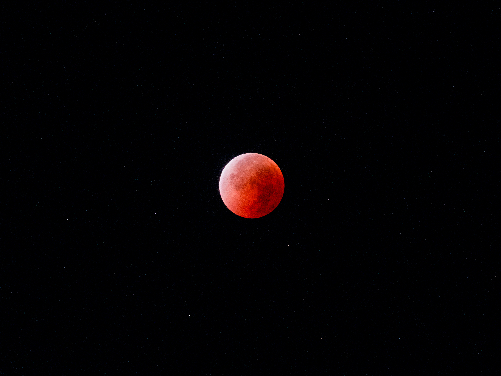

Photography

Orion Nebula

Rosette Nebula

Moon & Venus

Blood Moon

Leo Triplet
Undergraduate in Engineering Physics, IIT Roorkee
Astrophysics | Theory & Observation | Computational Modeling
My interest lies at the intersection of theoretical and observational astrophysics, with the primary goal of understanding fundamental physics through astrophysical systems. I am particularly fascinated by extreme and energetic phenomena in the universe, including the early universe and the Big Bang, supernovae, compact binary mergers, black holes and their environments, neutron stars and pulsars, relativistic jets from pulsars and quasars, active galactic nuclei, FRBs, GRBs, gravitational waves, and the origin of high-energy cosmic rays. These systems and the underlying mechanism strongly shape my curiosity.
Alongside these primary interests, I also maintain a strong curiosity about stellar astrophysics, white dwarfs, galaxy formation and interactions, structure of the universe across scales, dark matter and dark energy, planetary formation, exoplanets and exomoons, and protoplanetary systems. I am also deeply interested in how modern telescopes and observational techniques work, including how observations are designed, calibrated, and interpreted. My broader goal is to learn astrophysics as a whole, grow my interests continuously, and develop the ability to build theoretical models, implement computational frameworks, and test ideas using real observational data. I am highly motivated to explore new areas of astrophysics, including those I am not yet familiar with.
Hi!, I am Dhairya Kotecha, third-year undergraduate at the Indian Institute of Technology Roorkee, deeply fascinated by the universe and the physics that governs it. My curiosity spans the largest scales of cosmology to the smallest scales of fundamental particles.
My interest in physics began early in high school, where I spent hours solving problems and learning to approach complex questions. I was fortunate to have an excellent teacher who emphasized deep physical understanding rather than rote methods, which made me desire to pursue research in physics and ultimately led me to IIT Roorkee. For a brief period during high school, I had access to binoculars while a comet was visible, which pushed me to wake up before sunrise each day to observe the sky, from which my intrest for astronomy was born. Slowly, from light-polluted skies of Mumbai, I started to identifying planets and stars apart, and tracking the night sky.
At IIT Roorkee, I got to actively pursue astronomy through the Physics and Astronomy Club, participating in as many stargazing sessions as possible. Access to darker skies and telescopes allowed me to observe Jupiter and its moons, Saturn and its rings, nebulae, open and globular clusters and take their photos. These moments remain deeply memorable and reaffirmed my desire to study the universe.My formal introduction to astrophysics came through project, working on eclipsing binaries at Kritika, IIT Bombay, where I learned foundational astronomy and astrophysical concepts under the mentorship of Bhavesh Rajpoot. This experience helped astrophysics “click” for me. I began to understand how physical models are constructed and applied to real cosmic systems, and how clever observational techniques allow us to extract remarkable detail from distant objects. Since then, I have pursued projects in Big Bang nucleosynthesis, the Tip of the Red Giant Branch (TRGB) method for galaxy distance determination, and participated in the Radio Astronomy Winter School at IUCAA. Working with real observational data, understanding instrumental limitations, and performing data analysis to draw physical conclusions showed me how theory, observation, and instrumentation come together in practice,and motivated me pursue research in astrophysics.
The standard Big Bang Nucleosynthesis, based on the Maxwell–Boltzmann energy distribution and well-measured nuclear cross-sections, successfully explains the observed abundances of deuterium and helium but shows persistent tension for lithium. This report summarizes the physical conditions and reaction mechanisms of BBN, as well as the impact of adopting Tsallis’ statistics. The q-generalized distribution alters the population of particles at different energies, affecting the nuclear reaction rates and element yields. Previous studies suggest that minor deviations from thermal equilibrium can lower the predicted lithium abundance while preserving the overall agreement of standard BBN with observations.
ReportThe accurate determination of extragalactic distances is fundamental to understanding galaxy formation and cosmology. In this work, the Tip of the Red Giant Branch (TRGB) method is used as a standard candle to study the Draco dwarf spheroidal galaxy using imaging data from the GROWTH–India Telescope. A complete photometric analysis pipeline was developed, including PSF photometry, astrometric cross-matching, photometric calibration, and the construction of a calibrated color–magnitude diagram. The resulting dataset provides a robust foundation for TRGB detection and subsequent distance estimation, demonstrating the reliability of resolved stellar photometry for nearby galaxies.
ReportLight curves of hierarchical multi-star systems contain multiple overlapping periodic signals arising from the orbital motion of different stellar components. This project investigates the extraction of these periods using Fourier-based techniques, specifically the Lomb–Scargle periodogram, which is well suited for unevenly sampled astronomical time-series data. Simulated light curves of a compact triply eclipsing stellar system were analyzed to recover the orbital periods of both the inner binary and the outer companion. The results demonstrate how frequency-domain methods can successfully decompose complex photometric signals and extract physically meaningful orbital parameters.
ReportNeutral hydrogen (HI) plays a central role in tracing the large-scale structure and kinematics of the Milky Way through its 21 cm hyperfine transition. In this project, Galactic HI emission was observed using a compact radio astronomy setup, and calibrated spectra were obtained near the hydrogen line frequency. The processed data were analyzed to identify spectral features associated with neutral hydrogen and to study velocity structures through Doppler-shift measurements. These observations provide insight into Galactic rotation and spiral structure while illustrating the fundamental principles of radio astronomical instrumentation, calibration, and spectral analysis.
ReportEclipsing binary star systems provide powerful constraints on fundamental stellar parameters through their photometric and dynamical behavior. This project focuses on the modeling and analysis of eclipsing binaries using the PHOEBE framework, which enables forward modeling of light curves based on physical system parameters. Simulated and observational datasets were used to explore the dependence of light curve morphology on orbital and stellar properties. The study highlights the role of eclipsing binaries as precise laboratories for stellar astrophysics and demonstrates the connection between theoretical models and observational data.
ReportSuperheterodyne Receiver Analysis — Report
Receiver Characteristics — Report
Telescope Beam Width — Report
A Spectrum is a goldmine of astronomical information, and every time you think you’ve milked it for all it’s worth, you find more clues encoded in it...
~ Max Tegmark, Our Mathematical Universe
Email: dhairya_k@ph.iitr.ac.in
GitHub: Dhairya-K
Linkedin: Dhairya Kotecha